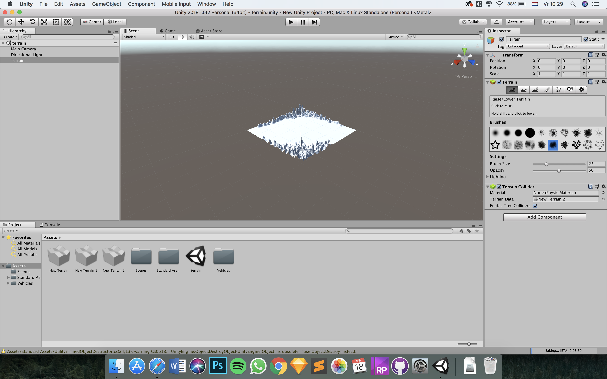
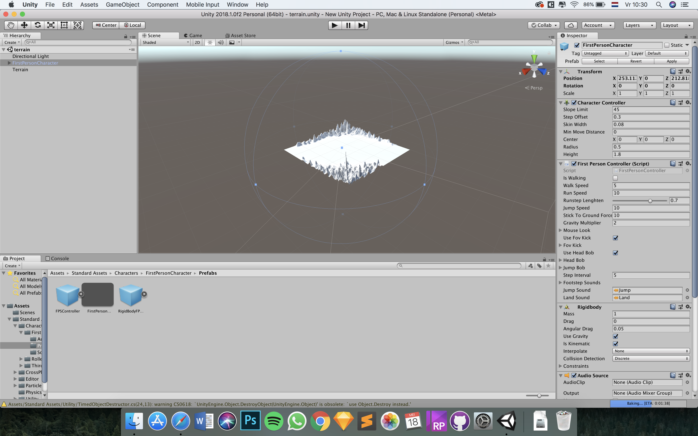
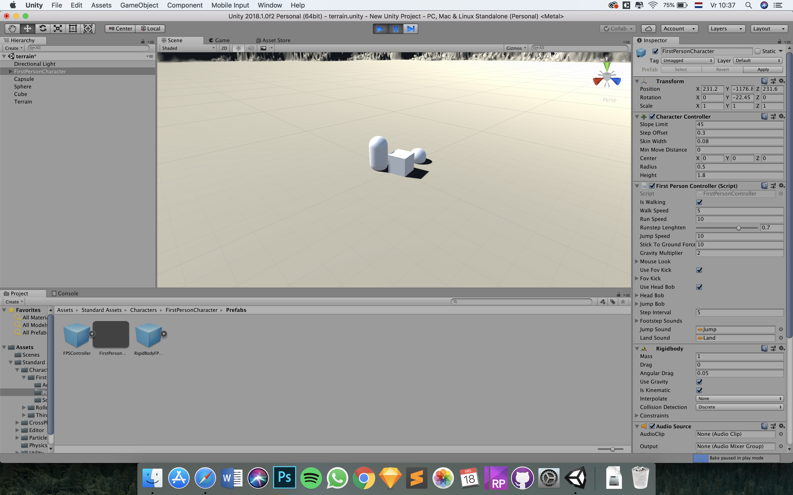
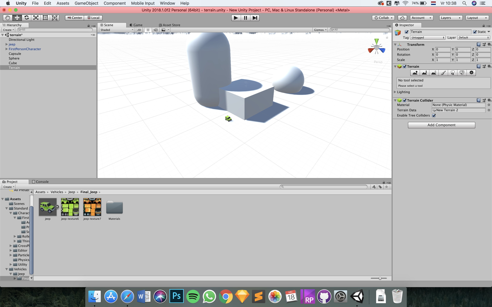
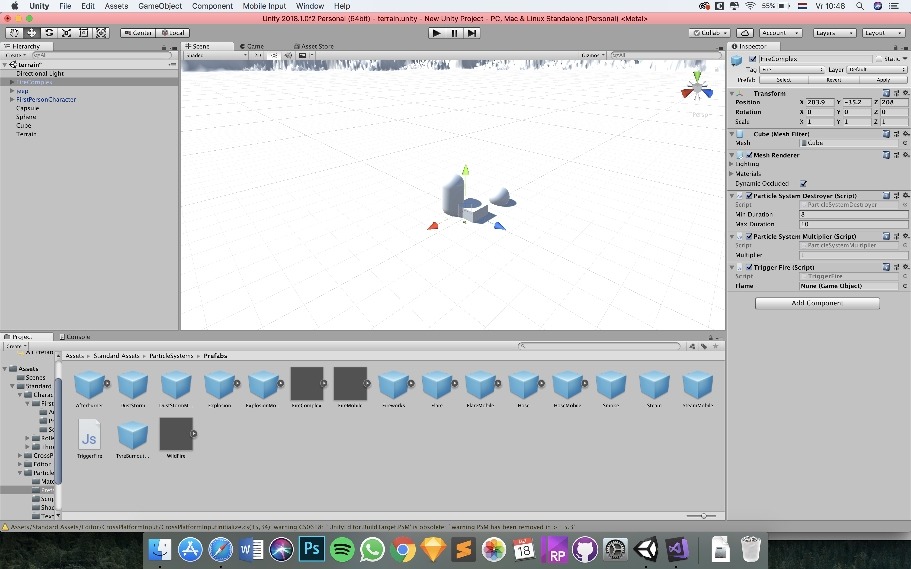
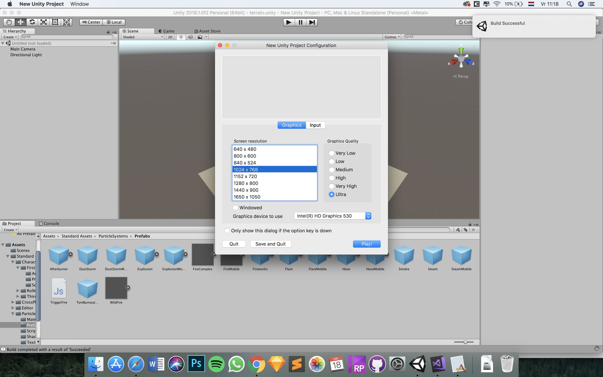
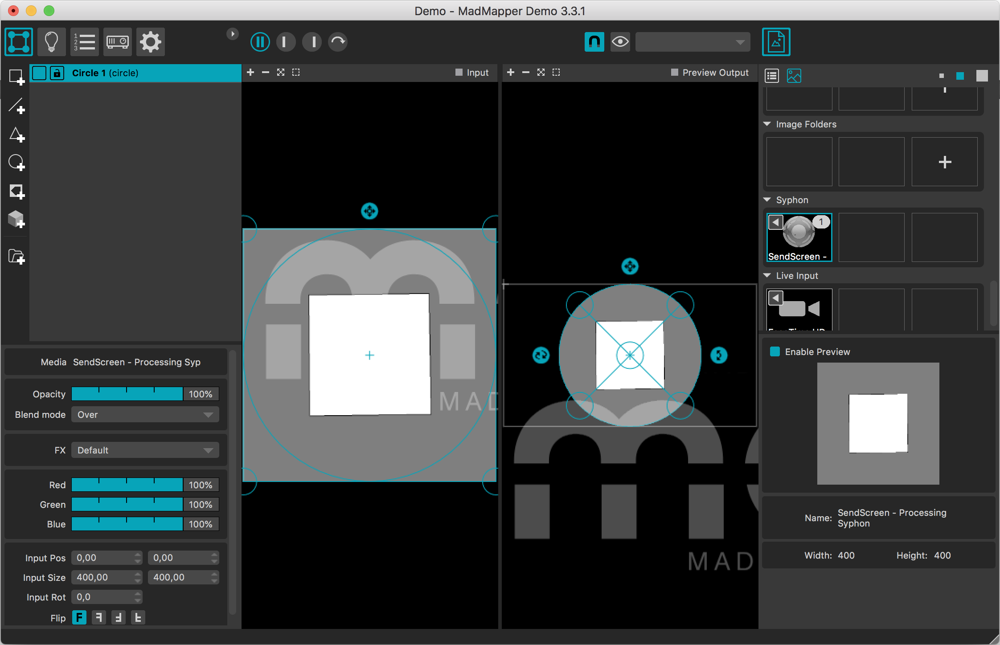
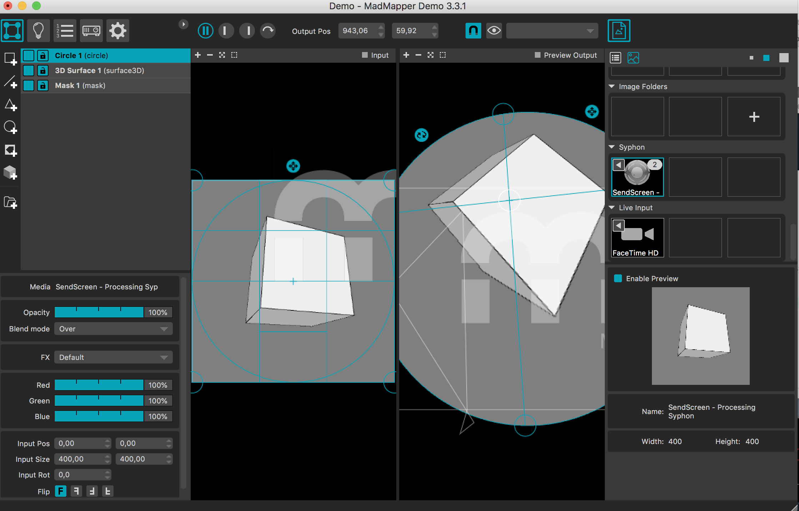
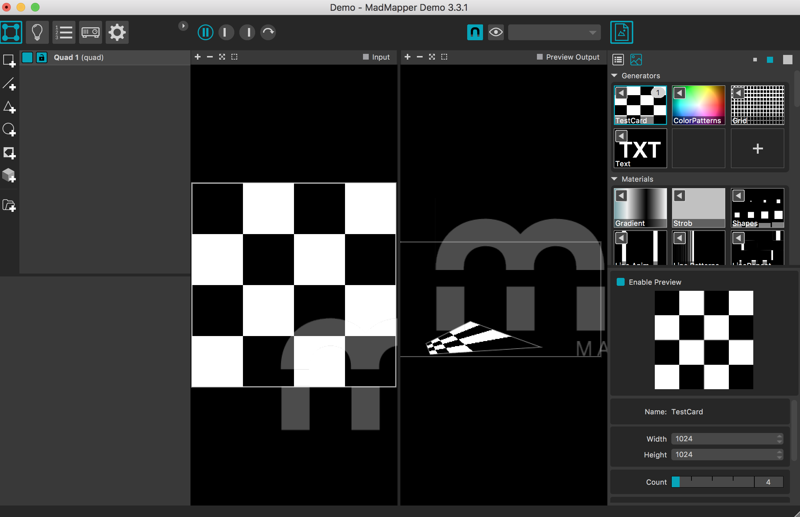

Result

During this workshop I've worked with Unity and MadMapper. Unity is a cross-platform game engine which is primarily used to develop both three-dimensional and two-dimensional video games and simulations for computers, consoles, and mobile devices. MadMapper is an advanced tool for video and light mapping, adapted for various fields, such as architectural video projection, art installation, stage design and live show, MadMapper software made possible hundreds of projects around the globe by an incredibly active user community of Artists looking for a fast, powerful and user-friendly mapping software.
When you start a new project, your scene is completely empty. The first thing you are going to need is the terrain (GameObject > 3D object > Terrain).
In order to be able to walk through the virtual world, you need a virtual player that you can operate. For this purpose you need to use a package that comes with Unity in which all scripts are already processed to add a First-Person player.
You can now walk around in your virtual world, but it is still completely empty with the exception of a few hills. This does not make an interesting world. Therefore you need to add a number of objects ( GameObject > 3D object > Cube).
Cubes are not very interesting when you want to create a realistic virtual world. You should add more complex objects. One way to acquire these more complex objects is via the Unity Asset Store. In this Store you can get all kinds of 3D models, animations, scripts, etc. that you can use in your virtual world. For some you will have to pay and others are free for you to use (Window > Asset Store).
You can walk through the virtual world and see things, but real interaction is not available yet. You will add a trigger in this step so that when the player enters a certain area, something happens in the environment. In this case, make sure that when the player comes close to the asset, it will burst into flames (Add Component > Physics > Sphere Collider).
You have now experienced that you can walk through your virtual world in the Game pane of Unity. But it is much more fun to make an actual application that you can use without needing to start Unity (File > Build Settings).
To get started you need to install Syphon library (Sketch > Import Library > Add Library > Syphon) and restart after. In the Processing application go to: Examples > Contributed Libraries > Syphon > SendScreen. Switch to the MadMapper application and create a new shape.
Now you can experiment with different shapes and surfaces or create multiple surfaces.
 